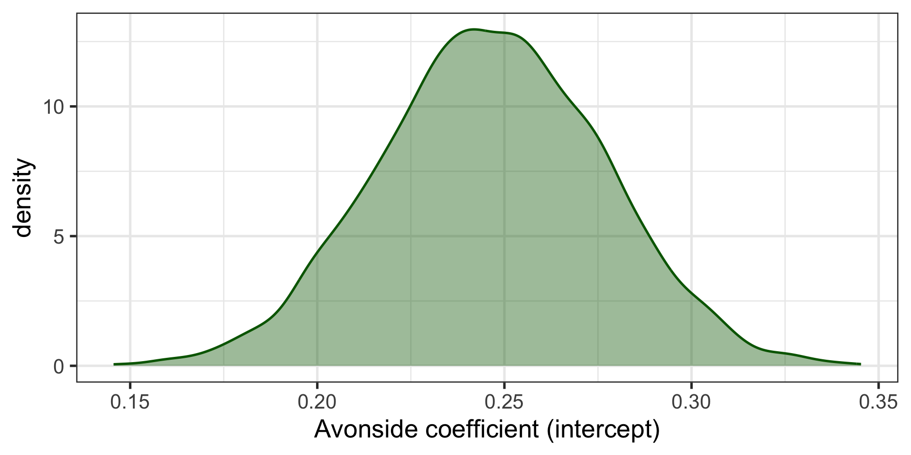
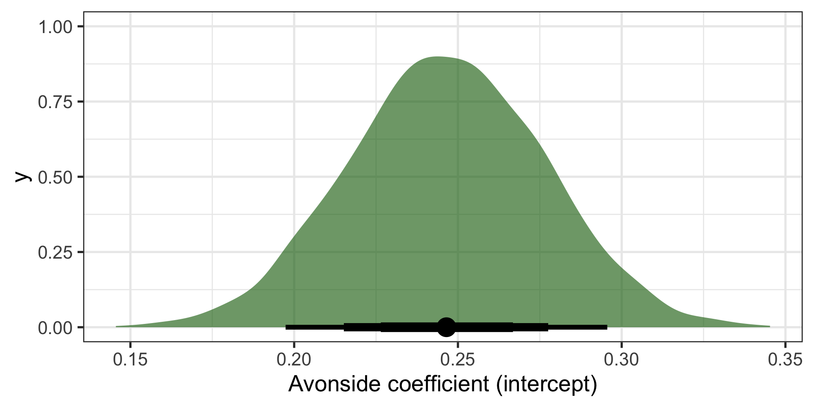
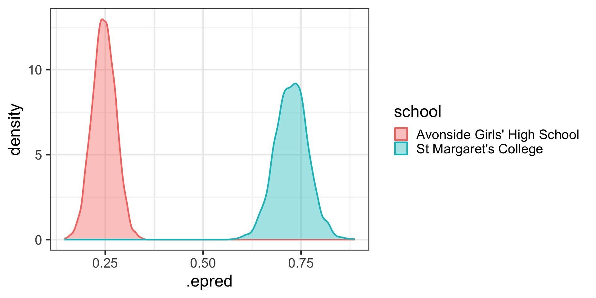
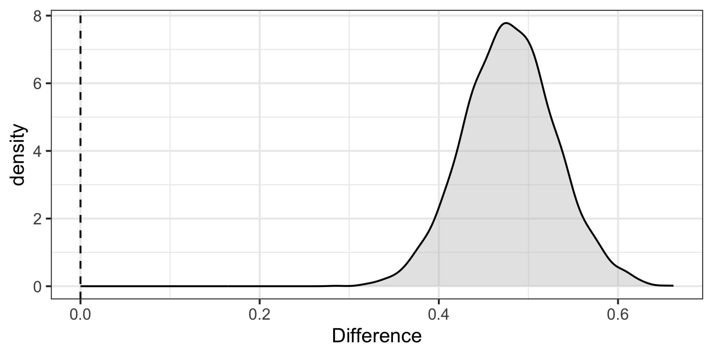

Bayesian Data Analysis
Orientation
Joshua Wilson Black ![]()
Te Kāhui Roro Reo | New Zealand Institute of Language, Brain and Behaviour
Te Whare Wānanga o Waitaha | University of Canterbury
Overview
Overview
- Plan for these sessions
- Fit a Bayesian model
- What’s the big deal?
- Flexible estimates
- Natural interpretation of CIs
The plan
Bayes sessions
- Four intro sessions:
- Orientation
- What does my model say?
- What does my model assume?
- Is my model healthy?
- Josh away: 16/03, 23/03.
- Mid-semester break
- Six sessions on specific model structuress.
- Regression
- Multi-level regression
- Likert-scale data
&c. &c. Based on your interest.
Fit a Bayesian Model
Data
“What school did you go to?”
Wrangling
A model
- This is a very simple ‘analysis of variance’ model
- We want to see if
school(i.e. Avonside vs. St Margarets) makes a difference to trap realisation- …without thinking about confounding from other factors 😱
- How do we ‘make it Bayesian’?
A Bayesian model
🎊 Congratulations, you’re a Bayesian! 🎊
brmsmakes Bayesian methods incredibly accessible.- For many models just putting in
brm()instead oflm()(lmer(), etc…), will work.
lmer() → brm()
‘Wow! Now my model converges!’
🐉🐉🐉
kia tūpato…
What’s the big deal?
Model interpretation
Call:
lm(formula = F1_lob2 ~ school, data = trap_sub)
Residuals:
Min 1Q Median 3Q Max
-2.73538 -0.47347 -0.02352 0.46701 2.95033
Coefficients:
Estimate Std. Error t value Pr(>|t|)
(Intercept) 0.24632 0.02946 8.362 <2e-16 ***
schoolSt Margaret's College 0.47782 0.05258 9.087 <2e-16 ***
---
Signif. codes: 0 '***' 0.001 '**' 0.01 '*' 0.05 '.' 0.1 ' ' 1
Residual standard error: 0.8195 on 1126 degrees of freedom
Multiple R-squared: 0.06832, Adjusted R-squared: 0.0675
F-statistic: 82.58 on 1 and 1126 DF, p-value: < 2.2e-16- Point estimates of coefficients
- Standard error
- Statistical significance tests
Model interpretation (cont.)
Family: gaussian
Links: mu = identity
Formula: F1_lob2 ~ school
Data: trap_sub (Number of observations: 1128)
Draws: 4 chains, each with iter = 2000; warmup = 1000; thin = 1;
total post-warmup draws = 4000
Regression Coefficients:
Estimate Est.Error l-95% CI u-95% CI Rhat Bulk_ESS
Intercept 0.25 0.03 0.19 0.30 1.00 3984
schoolStMargaretsCollege 0.48 0.05 0.38 0.58 1.00 4079
Tail_ESS
Intercept 2652
schoolStMargaretsCollege 3128
Further Distributional Parameters:
Estimate Est.Error l-95% CI u-95% CI Rhat Bulk_ESS Tail_ESS
sigma 0.82 0.02 0.79 0.86 1.00 3986 3221
Draws were sampled using sampling(NUTS). For each parameter, Bulk_ESS
and Tail_ESS are effective sample size measures, and Rhat is the potential
scale reduction factor on split chains (at convergence, Rhat = 1).- ‘Draws’?
- Coefficients
- Error and intervals
- ‘Rhat’, ‘Bulk ESS’??
- No statistical significance tests
Difference: no point estimates
- Bayesian model gives distributions for all parameters.

No privileged:
- summary
- error intervals
summary() gives a mean with 95% interval.
- Predictions from the model take into account uncertainty about coefficient.
Difference: Bayesian CIs
- Both Bayesian and non-Bayesian models produce ‘CIs’, but use different words for the ‘C’:
- ‘Confidence intervals’ vs.
- Bayesian ‘credible intervals’ (sometimes ‘compatible intervals’)
- Interpretation: according to our data and model, there is a 95% change the parameter is in the interval.
- There’s nothing special about 95%, we can use any other number we like (often more than one).

- This ‘half-eye’ plot shows 50%, 70% and 90% intervals around the mean.
- More on making these plots next time!
Flexible estimates
- Let’s predict trap realisation for these schools.
- Under the hood:
- generate an Avonside value from the distribution, then
- generate a St Margaret’s value and add to the Avonside value.
- Repeat lots of times to get a distribution.
- This is easy, but the models can get much more complicated!
trap realisations
Difference in trap
- Our model and data are not compatible with saying there is no difference.
- In this case, this is pretty much identical to the distribution of the ‘St Margarets’ coefficient in our simple model.
- But models can get more complicated!
Background: probability
- The alternative to Bayesianism is ‘frequentism’.
- Core difference: how they use probability
- Frequentists: probability quantifies the reliability of the method.
- Bayesians: probability quantifies uncertainty.
- Both are well motivated ideas!
Background: probability (cont.)
- Frequentist probability is connected to proportions of samples, e.g.:
- ‘If this analysis were repeated over and over again, we would draw the wrong conclusion 5% of the time.’
- ‘If you sampled NZE speakers born in 1937, 10% of would regularly use “kia ora” as a greeting.’
- Bayesian’s use probability for uncertainty:
- ‘Given the data and model, we are 90% sure that the effect of this variable is greater than zero’
- ‘The probability that language X and language Y are in the same family is 65%’ (…what would you sample?)
- It’s very hard to understand the Bayesian examples in terms of sampling.
- ‘If universes were as plenty as blackberries…’ (CS Peirce)
Confidence vs. credible (again)
- Standard 95% confidence intervals: i.e. ‘frequentist’
- If we repeat this method, the parameter we’re estimating will be inside the confidence interval 95% of the time.
- We’re ‘sampling’ applications of the method.
- It’s not a claim about this exact confidence interval!
- Bayesian 95% credible intervals:
- Given the data and model, we reckon, with 95% confidence, that the parameter is somewhere in here!
- It’s a claim about this exact interval.
- Easier to interpret, but we’ve changed the topic.
NB
- Bayesianism is not ‘Statistics 2.0’
- There’s nothing especially subjective about Bayesianism.
- Bayesian methods use probability to express some subjective elements.
- Frequentists often put subjective elements into model assumptions etc.
- You don’t have to be Bayesian
- …but you should understand it enough to read and review articles.
Next time
References
Allaire, JJ, Yihui Xie, Christophe Dervieux, Jonathan McPherson, Javier Luraschi, Kevin Ushey, Aron Atkins, et al. 2025. rmarkdown: Dynamic Documents for r. https://github.com/rstudio/rmarkdown.
Bürkner, Paul-Christian. 2017. “brms: An R Package for Bayesian Multilevel Models Using Stan.” Journal of Statistical Software 80 (1): 1–28. https://doi.org/10.18637/jss.v080.i01.
———. 2018. “Advanced Bayesian Multilevel Modeling with the R Package brms.” The R Journal 10 (1): 395–411. https://doi.org/10.32614/RJ-2018-017.
———. 2021. “Bayesian Item Response Modeling in R with brms and Stan.” Journal of Statistical Software 100 (5): 1–54. https://doi.org/10.18637/jss.v100.i05.
Fromont, Robert. 2025. nzilbb.labbcat: Accessing Data Stored in “LaBB-CAT” Instances. https://doi.org/10.32614/CRAN.package.nzilbb.labbcat.
Kay, Matthew. 2024. tidybayes: Tidy Data and Geoms for Bayesian Models. https://doi.org/10.5281/zenodo.1308151.
Müller, Kirill. 2025. here: A Simpler Way to Find Your Files. https://doi.org/10.32614/CRAN.package.here.
R Core Team. 2025. R: A Language and Environment for Statistical Computing. Vienna, Austria: R Foundation for Statistical Computing. https://www.R-project.org/.
Wickham, Hadley, Mara Averick, Jennifer Bryan, Winston Chang, Lucy D’Agostino McGowan, Romain François, Garrett Grolemund, et al. 2019. “Welcome to the tidyverse.” Journal of Open Source Software 4 (43): 1686. https://doi.org/10.21105/joss.01686.
Wilson Black, Joshua, James Brand, Jen Hay, and Lynn Clark. 2023. “Using Principal Component Analysis to Explore Co‐variation of Vowels.” Language and Linguistics Compass 17 (1): e12479. https://doi.org/10.1111/lnc3.12479.
Xie, Yihui, J. J. Allaire, and Garrett Grolemund. 2018. R Markdown: The Definitive Guide. Boca Raton, Florida: Chapman; Hall/CRC. https://bookdown.org/yihui/rmarkdown.
Xie, Yihui, Christophe Dervieux, and Emily Riederer. 2020. R Markdown Cookbook. Boca Raton, Florida: Chapman; Hall/CRC. https://bookdown.org/yihui/rmarkdown-cookbook.